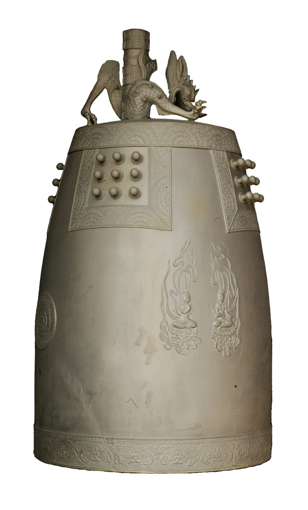

주철장
녹인 쇳물을 틀에 굳혀 기물을 만드는 기술

제작과정
종의 크기보다 약간 작은 크기의 벽돌을 쌓은 다음 이 벽돌에 고령토, 점토를 혼합하여 종의 형태로 만든다. 그 다음에 표면을 손질하고 물에 갠 흑연가루로 마무리를 한다. 다음으로는 밀랍으로 종의 모형을 제작하고 여기에 주물사를 밀랍 표면에 두 번을 바른다. 이후 밀랍을 녹여서 내고 제작된 외형을 내형에 조립하여 주조함으로써 종을 완성한다.
사용재료
종의 크기에 따라 다르기는 하나 기본적으로는 동 80％, 주석 17％로 합금하며, 밀랍제조의 경우 밀랍에 소기름을 기본적으로는 8:2로 혼합하되, 그 배합 비율은 기후에 따라 다르다.
특징
우리나라 범종의 특징은 세부의 장식이 정교하고 울림소리가 웅장하여 동양권의 종 가운데에서도 가장 뛰어나다. 형태는 항아리를 거꾸로 엎어놓은 것 같은 모습이며 고리 역할을 하는 용뉴와 대롱 형태의 용통이 부착되어 있다. 이러한 우리나라 범종 가운데 가장 오래된 종은 통일신라시대인 725년에 제작된 오대산 상원사 동종이다. 또한 그 크기와 미적인 면에서는 성덕대왕신종을 들 수 있다.
전승자
| 보유구분 | 이름 | 성별 | 기예능 | 지역 | 인정일 |
|---|---|---|---|---|---|
| 보유자 | 원광식(元光植) | 남 | 종제작 | 충북 | 2001-03-12 |
소재지
충북